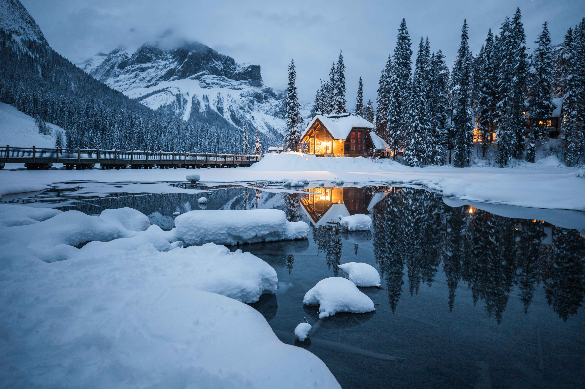

Winter is the coldest season of the year in polar and temperate zones. It occurs between autumn and spring. The tilt of Earth's axis causes seasons; winter occurs when a hemisphere is oriented away from the Sun. Different cultures define different dates as the start of winter, and some use a definition based on weather.
When it is winter in the Northern Hemisphere, it is summer in the Southern Hemisphere, and vice versa. In many regions, winter brings snow and freezing temperatures. The moment of winter solstice is when the Sun's elevation with respect to the North or South Pole is at its most negative value; that is, the Sun is at its farthest below the horizon as measured from the pole. The day on which this occurs has the shortest day and the longest night, with day length increasing and night length decreasing as the season progresses after the solstice.